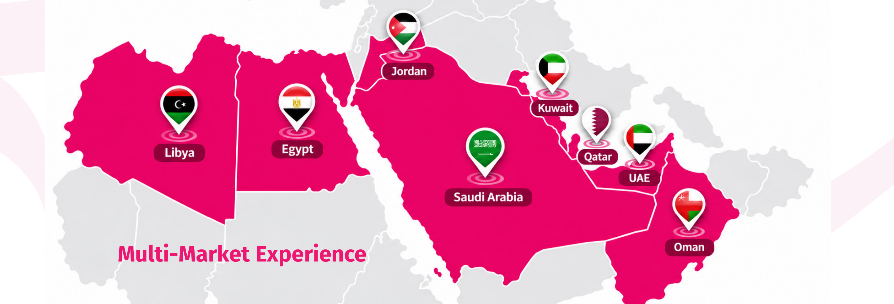

Former Media Consultant at Facebook
Professional experience in digital marketing, advertising strategy, and performance-driven marketing solutions.
I'm Sohaila Halim, a Brand, Marketing & Business Growth Strategist with over 12 years of experience helping businesses, entrepreneurs, and personal brands turn ideas into market opportunities and strategic direction into measurable business outcomes.
Throughout my career, I've contributed to more than 600 projects across diverse industries and markets, working with startups, established businesses, industry experts, and high-ticket service providers.
My expertise extends beyond traditional branding and marketing. I specialize in developing brand strategies, identifying growth opportunities, structuring products and offers, and building integrated marketing systems aligned with business objectives.
From establishing a brand's competitive position to developing customer acquisition strategies, optimizing sales funnels, and supporting business expansion, I approach every project with a combination of strategic thinking, commercial understanding, and creative problem-solving.
I believe effective marketing begins long before the first campaign. It begins with understanding the business, identifying the right opportunities, and making strategic decisions that create lasting value.

0+
Years of Experience
0+
Projects Across Multiple Industries
My professional background combines over 12 years of hands-on industry experience with academic education and specialized training in marketing, business strategy, consumer behavior, and project management.
This multidisciplinary foundation enables me to approach business challenges from both strategic and operational perspectives, connecting market insights, consumer psychology, business objectives, and structured execution.
Professional experience in digital marketing, advertising strategy, and performance-driven marketing solutions.
Over the past 12 years, our work has crossed borders and reached clients across the Arab world and beyond.
We've proudly delivered branding, marketing, and content solutions to businesses and entrepreneurs in multiple countries, adapting strategies to local markets, cultures, and audience behaviors.

Strategic Thinking. Commercial Understanding. Measurable Impact.
Strategies built around business objectives, not marketing activities alone.
Experience across diverse business models, industries, and regional markets.
Connecting branding, consumer psychology, product development, and marketing.
Turning business opportunities into actionable plans and measurable outcomes.